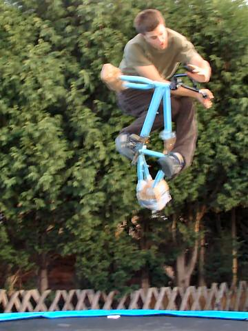
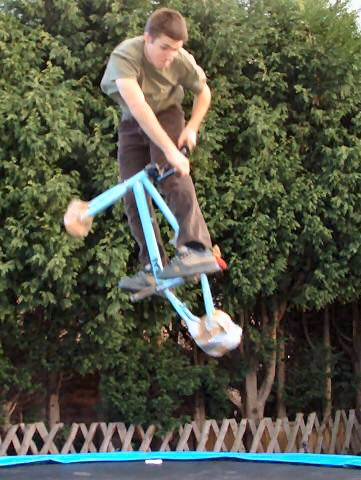
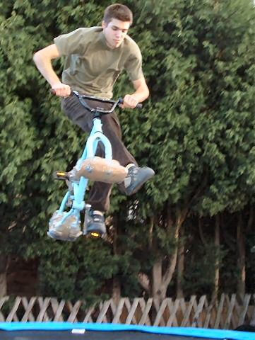
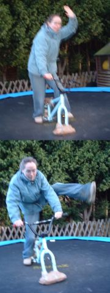
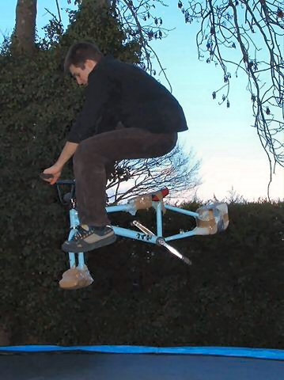
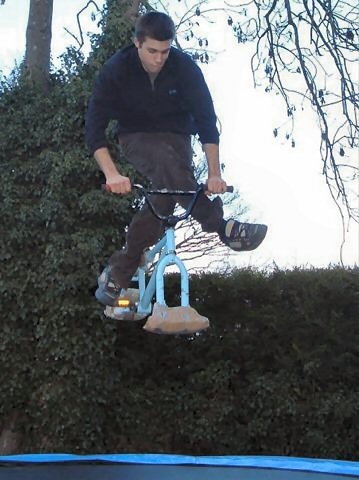
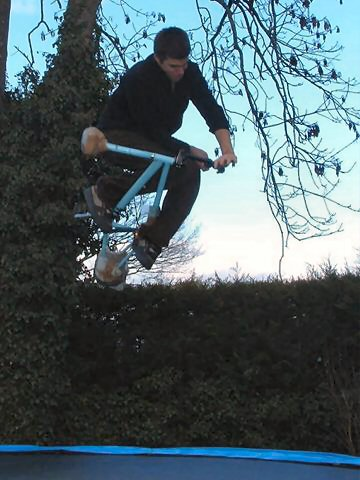

|
       |
| this is the best table i can do pretty much but my feet come off the pedals. turndowns are easy on the trampoline. phyllis kicks are easy too, but doing them grized gets harder. this is becky on the trampoline. she can't go very high. no foot kick thingy - it's a new style no footer. This is a new trick called a morris dancer or a spaz. it's like a crosslegged no footer. i can do this table and land it to the pedals. |